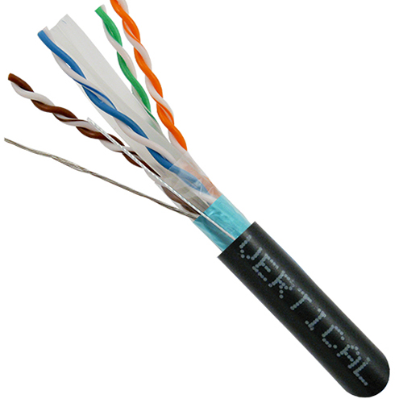

Tipos de Cables para el Sistema de Cableado Horizontal
1. Cable UTP (Unshielded Twisted Pair)
El cable UTP es el más común en el cableado horizontal. Consiste en pares de cables trenzados sin blindaje.

- Categorías: Cat5e, Cat6, Cat6a
- Ventajas: Económico, fácil de instalar
- Desventajas: Susceptible a interferencias electromagnéticas
2. Cable STP (Shielded Twisted Pair)
Similar al UTP, pero con un blindaje adicional que lo protege contra interferencias.
- Mejor protección contra interferencias
- Más caro que el UTP
- Requiere una instalación más cuidadosa
3. Cable de Fibra Óptica
Aunque es más común en el cableado vertical, también se usa en horizontal para necesidades de alto ancho de banda.

- Tipos: Monomodo y multimodo
- Ventajas: Gran ancho de banda, inmune a interferencias electromagnéticas
- Desventajas: Más caro, requiere equipos especializados